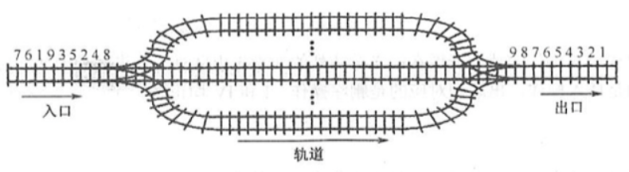
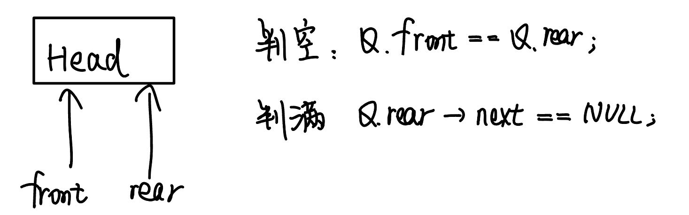
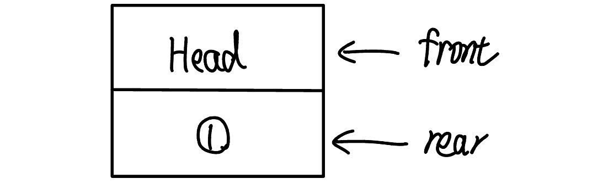

2022.12.10
操作受限的线性表、先进先出FIFO、队头（删除）、队尾（添加）、空队列
// 队列的顺序实现 - 两种方案
/**
* 定义
* 初始化
* 判空
* 增
* 删
* 查
*/
#include<stdio.h>
// 定义
#define MaxSize 10
typedef struct
{
int data[MaxSize];
int front,rear;
}SqQueue1;// 会浪费一个空间
typedef struct
{
int data[MaxSize];
int front,rear;
int size;
}SqQueue2; // 不会浪费空间
typedef struct
{
int data[MaxSize];
int front,rear;
int tag;
// 当最近一次是删除时, tag==0, - 只有删除才能导致队空,
// 当最近一次是添加时, tag==1; - 只有插入再能导致队满.
// 队满条件: Q.rear==Q.front && Q.tag=1;
// 队空条件: Q.rear==Q.front && Q.tag=0;
}SqQueue3; // 不会浪费空间
// 初始化
bool InitSqQueue1(SqQueue1 &Q){
Q.front = 0;
Q.rear = 0;
return true;
}
// 队尾指针可能指向下一个要插入的元素, 也可以能指向最后一个内容, 考试时要注意
bool InitSqQueue2(SqQueue2 &Q){
Q.front = 0;
Q.rear = 0;
Q.size = 0;
return true;
}
// 判空
bool EmptySqQueue1(SqQueue1 Q){
return Q.front == Q.rear;
}
bool EmptySqQueue2(SqQueue2 Q){
return Q.size == 0;
}
// 插入
bool EnQueue1(SqQueue1 &Q, int x){
// 队满
if((Q.rear+1)%MaxSize == Q.front) return false;
// 插入
Q.data[Q.rear] = x;
Q.rear = (Q.rear+1)%MaxSize;//取余运算
return true;
}
bool EnQueue2(SqQueue2 &Q, int x){
// 队满
if(Q.size==MaxSize) return false;
// 插入
Q.data[Q.rear] = x;
Q.rear = (Q.rear+1)%MaxSize;//取余运算
Q.size++;
return true;
}
// 出队
bool DeQueue1(SqQueue1 &Q, int &x){
// 队空
if(Q.rear == Q.front) return false;
// 删除
x = Q.data[Q.front];
Q.front = (Q.front+1)%MaxSize;
return true;
}
bool DeQueue2(SqQueue2 &Q, int &x){
// 队空
if(Q.size == 0) return false;
// 删除
x = Q.data[Q.front];
Q.front = (Q.front+1)%MaxSize;
Q.size--;
return true;
}
// 获取队头
bool GetHead1(SqQueue1 &Q, int &x){
// 队空
if(Q.rear == Q.front) return false;
// 删除
x = Q.data[Q.front];
return true;
}
bool GetHead2(SqQueue2 &Q, int &x){
// 队空
if(Q.rear == Q.front) return false;
// 删除
x = Q.data[Q.front];
return true;
}
int main(){
SqQueue1 Q;
InitSqQueue1(Q);
EnQueue1(Q,1);
EnQueue1(Q,2);
EnQueue1(Q,3);
return 0;
}
// 队列的链式实现
/**
* 定义
* 初始化
* 判空
* 增
* 删
* 查
*/
#include<stdio.h>
#include<stdlib.h>
#include<stdbool.h>
// 定义
typedef struct LNode
{
int data;
struct LNode *next;
}LNode;
typedef struct
{
LNode *front, *rear;
}LinkQueue;
// 初始化 - 带头节点
void InitQueue1(LinkQueue &Q){
Q.rear = (LNode*)malloc(sizeof(LNode));
if(Q.rear == NULL) return;
Q.front = Q.rear;
Q.front->next = NULL;
}
// 初始化 - 不带头节点
void InitQueue2(LinkQueue &Q){
Q.rear = NULL;
Q.front = Q.rear;
}
// 判空 - 带头节点
bool EmptyLinkQueue1(LinkQueue Q){
return Q.rear == Q.front;
}
// 判空 - 不带头节点
bool EmptyLinkQueue2(LinkQueue Q){
return Q.front==NULL;
}
// 进栈 - 带头节点
void EnQueue1(LinkQueue &Q, int x){
// 创建新节点
LNode *s = (LNode*)malloc(sizeof(LNode));
s->next = NULL;
s->data = x;
// 尾插
Q.rear->next = s;
// 修改尾指针
Q.rear = s;
}
// 进栈 - 不带头节点
void EnQueue2(LinkQueue &Q, int x){
// 创建新节点
LNode *s = (LNode*)malloc(sizeof(LNode));
s->next = NULL;
s->data = x;
// 尾插
if(Q.rear==NULL){
Q.rear = s;
Q.front = s;
}else{
Q.rear->next = s;
Q.rear = s;
}
}
// 出栈 - 带头节点
bool DeQueue1(LinkQueue &Q,int &x){
// 空队
if(Q.rear==Q.front)return false;
// 获取第一个节点
LNode *s = Q.front->next;
// 获取数据并返回
x = s->data;
// 改变front
Q.front->next = s->next;
// 改变rear - 最后一个节点
if(s->next==NULL)
Q.rear = Q.front;
// 释放第一个节点
free(s);
return true;
}
// 出栈 - 不带头节点
bool DeQueue2(LinkQueue &Q,int &x){
// 空队
if(Q.front==NULL)
return false;
// 获取节点s
LNode *s = Q.front;
// 保存数据
x = Q.front->data;
// 连接队列
if(Q.rear==Q.front)
Q.rear=NULL;
Q.front = s->next;
// 删除s
free(s);
return true;
}
// 取队列元素 - 带头节点
bool GetFront1(LinkQueue Q,int &x){
if(Q.rear==Q.front)return false;
x = Q.front->next->data;
return true;
}
// 取队列元素 - 不带头节点
bool GetFront2(LinkQueue Q,int &x){
if(Q.rear==NULL)return false;
x = Q.front->data;
return true;
}
int main(){
int x=0;
printf("带头节点队列测试\n");
LinkQueue Q1;
InitQueue1(Q1);
printf("是否为空:%d\n",EmptyLinkQueue1(Q1));
printf("插入 1 ");EnQueue1(Q1,1);
printf("插入 2 ");EnQueue1(Q1,2);
printf("插入 3 ");EnQueue1(Q1,3);
printf("插入 4 ");EnQueue1(Q1,4);
printf("\n是否为空:%d\n",EmptyLinkQueue1(Q1));
DeQueue1(Q1,x);printf("出栈 %d ",x);
DeQueue1(Q1,x);printf("出栈 %d ",x);
DeQueue1(Q1,x);printf("出栈 %d ",x);
DeQueue1(Q1,x);printf("出栈 %d ",x);
printf("\n是否为空:%d\n",EmptyLinkQueue1(Q1));
printf("\n不带头节点队列测试\n");
LinkQueue Q2;
InitQueue2(Q2);
printf("是否为空:%d\n",EmptyLinkQueue2(Q2));
printf("插入 1 ");EnQueue2(Q2,1);
printf("插入 2 ");EnQueue2(Q2,2);
DeQueue2(Q2,x);printf("出栈 %d ",x);
printf("插入 3 ");EnQueue2(Q2,3);
printf("插入 4 ");EnQueue2(Q2,4);
printf("\n是否为空:%d\n",EmptyLinkQueue2(Q2));
DeQueue2(Q2,x);printf("出栈 %d ",x);
DeQueue2(Q2,x);printf("出栈 %d ",x);
DeQueue2(Q2,x);printf("出栈 %d ",x);
DeQueue2(Q2,x);printf("出栈 %d ",x);
printf("\n是否为空:%d\n",EmptyLinkQueue1(Q2));
return 0;
}
【答案】：D
【答案】：B
【答案】：D
【答案】：B
【答案】：D
【答案】：0，1，2，3，4，5，6，7，8，【9。。。，19，20，0，1，2，3】，4，5
C
【答案】： 0，1，2，3，4，5，0，1，2，3，B
【答案】：A->C
【答案】：A->B
最不适合用作链式队列的链表是（ ）。 A. 只带队首指针的非循环双链表 B. 只带队首指针的循环双链表 C. 只带队尾指针的循环双链表 D. 只带队尾指针的循环单链表
【答案】：D->A
在用单链表实现队列时，队头设在链表的（）位置。 A.链头 B.链尾 C.链中 D.以上都可以
【答案】：D->A
用链式存储方式的队列进行删除操作时需要（）。 A．仅修改头指针 B.仅修改尾指针 C.头尾指针都要修改 D.头尾指针可能都要修改
【答案】：A->D
在一个链队列中，假设队头指针为front，队尾指针为rear，x所指向的元素需要入队，则需要执行的操作为（ ）. A. front=x, front=front->next B. x->next=front->next, front=x C. rear-›next=x, rear=x D. rear-›next=x, x-›next=null, rear=x
【答案】：C->D
假设循环单链表表示的队列长度为n，队头固定在链表尾，若只设头指针，则进队採作的时间复杂度为（）. A. O(n) B. O(1) C. O(n^2) D. O(nlog_2 n)
【答案】：B->A
若以1,2,3,4作为双端队列的输入序列，则既不能由输入受限的双端队列得到，又不能由输出受限的双端队列得到的输出序列是（）。 A. 1,2,3,4 B. 4.1.3.2 C. 4,2,3,1 D. 4,2,1,3
【答案】：C
【2010 统考真题】某队列允许在共两端进行入队採作，但仅允许在一端进行出队操作。若元素a,b,c,d,e依次入此队列后再进行出队探作，則不可能得到的出队序列是（). A. b,a,c,d,e B. d.b,a,c,e C. d,b,c.a.e D. e.c.b.a.d
【答案】：C
【2011 统考真题】已知循环队列存储在一维数组，A[0, n-1]中，且队列非空时 front 和 rear 分别指向队头元素和队尾元素。若初始时队列为空，且要求第一个进入队列的元素存储在A[0]处，则初始时front和rear的值分别是（ ） A. 0，0 B. 0，n-1 C. n-1，0 D. n-1，n-1
【答案】：B
我的方法：
王道给出了一种方法，front指向第一个元素，如果空的时候指向0；rear指下一个要插入的元素，如果是空就指向0，因为“下一个要插入的元素”就是0！
所以这道题，rear指向队尾元素，就可以理解成“下一个要插入位置的前一个”，表空的时候下一个插入到0，所以rear一开始指向n-1！
【2014 统考真题】循环队列放在一维数组A[0..M-1]中，end1 指向队头元素，end2 指向队尾元素的后一个位置。假设队列两端均可进行入队和出队操作，队列中最多能容纳 M-1 个元素。初始时为空。下列判断队空和队满的条件中，正确的是（ ）。
A. 队空：end1==end2;
队满：end1==(end2+1)mod M;
B. 队空：end1==end2;
队满：end2== (end1+1)mod (M-1);
C. 队空：end2== (end1+1) mod M;
队满：end1== (end2+1)mod M;
D. 队空：end1== (end2+1) mod M;
队满：end2== (end1+1)mod (M-1);
【答案】：D->A
【2016 统考真题】设有如下图所示的火车车轨，入口到出口之问有n条轨道，列车的行进方向均为从左至右，列车可驶入任意一条轨道。现有编号为 1~9 的9列列车，驶入的次序依次是8,4,2,5,3,9,1,6,7。若期望驶出的次序依次为1~9，则n至少是（） A. 2 B. 3 C. 4 D. 5

【答案】：8 4 2 5 3 9 1 6 7
98
7654
32
1
C
【2018 统考真题】现有队列Q与栈S，初始时Q中的元素依次是1,2,3,4,5,6(1 在以头)，S为空。若仅允许下列 3 种操作：① 出队并输出出队元素;② 出队并将出队元素入栈;③ 出栈并输出出栈元秦，则不能得到的输出序列是（ ）。 A. 1.2.5.6.4.3 B. 2.3.4.5.6.1 C. 3.4.5.6.1.2 D. 6.5,4,3.2.1
【答案】：C
【2021 统考真题】初始为空的队列Q的一端仅能进行入队操作，另外一端既能进行入队操作又能进行出队操作。若Q的入队序列是1,2,3,4,5，则不能得到的出以序列是( ) A. 5, 4, 3, 1, 2 B. 5, 3, 1, 2, 4 C. 4, 2, 1, 3, 5 D. 4, 1, 3, 2, 5
【答案】：D
若希望循环队列中的元索都能得到利用，则需设置一个标志域tag，并以tag的值为0或1来区分队头指针front 和队尾指针rear相同时的队列状态是“空”还是“满”试编写与此结构相应的入队和出队算法。
【答案】：
int MAX;
bool pop(Queue &Q, int &num){
if((Q.rear+1)%MAX == Q.front && Q.tag == 0) return false;
num == Q.data[Q.front];
Q.front = (Q.front+1)%MAX;
Q.tag = 0;
return true;
}
bool push(Queue &Q, int num){
if((Q.rear+1)%MAX == Q.front && Q.tag == 1) return false;
Q.data[Q.rear] == num;
Q.rear = (Q.rear+1)%MAX;
Q.tag = 1;
return true;
}
void transform(Queue &Q, Stack &S){
while(QIsEmpty(Q)!=false)
SPush(S,QPop(Q));
while(SIsEmpty(S)!=false)
QPush(Q,SPop(S));
}
Push(S, x); //元素× 入栈 S
Pop(S, x); //s出栈并将出栈的值赋给×
StackEmpty (S) : //判新栈是否为空
StackOverflow(S); //判断栈是否满
如何利用栈的运算来实现该队列的3个运算（形参由读者根据要求自己设计）？
Enqueue; //将元素x入队
Dequeue; // 出队，并将元素存在x中
QueueEmpty; // 判断队列是否为空
【答案】：
bool Enqueue(int x){
if(StackOverflow(S1)) return false;
if(!StackEmpty(S2)) return false;
Push(S2,x);
int temp;
// 再把S1内容放到S2
while(!StackEmpty(S1) && !StackOverflow(S2)){
Pop(S1,temp);
Push(S2,temp);
}
// 再把S2内容放回去
while(!StackEmpty(S2) && !StackOverflow(S1)){
Pop(S2,temp);
Push(S1,temp);
}
return true;
}
bool Dequeue(int &x){
if(StackEmpty(S1)) return false;
if(!StackEmpty(S2)) return false;
int temp;
// 再把S1内容放到S2
while(!StackEmpty(S1) && !StackOverflow(S2)){
Pop(S1,temp);
Push(S2,temp);
}
// 再把S2内容放回去
Pop(S2,x)
while(!StackEmpty(S2) && !StackOverflow(S1)){
Pop(S2,temp);
Push(S1,temp);
}
return true;
}
bool QueueEmpty(){
return StackEmpty(S1);
}
【2019统考真题】请设计一个队列，要求满足：【1】初始时对列为空【2】入队时，允许增加队列占用空间;【3】出队后，出队元素所占用的空向可重复使用，空间只增不减：【4】入队採作和出队操作的时间复杂度始终保持为 0（1）。请回答下列问题： 1）该队列是应选择链式存储结构，还是应选择顺序存储结构？ 2）画出队列的初始状态，并给出判断队空和队满的条件。 3）画出第一个元素入队后的队列状态。 4）给出入队操作和出队操作的基本过程。
【答案】：
链式


```C++ bool push(Queue &Q, int num){ LNode p = NULL; if(Q.rear->next==NULL){ // 尾指针指向的结点后没有空结点 p = (LNode)malloc(sizeof(Lnode)); if(p==NULL) return false; p->num = num; Q.rear->next = p; Q.rear = p; p->next = NULL; return true; }else{ // 尾指针指向的结点后有空结点 Q.rear->next->num = num; Q.rear = Q.rear->next; return true; } }
bool pop(Queue &Q, int &num){ LNode *p = NULL; // 空队列 if(Q.front==Q.rear) return false; if(Q.front->next==Q.rear){ // 队列仅剩一个元素 num = Q.front->next->num; Q.rear = Q.front; return true; }else{ // 队列还有两个及以上元素，把空节点挂在rear后边 p = Q.front->next; p->next = Q.rear->next; num = p->num; rear->next = p; return true; } } ```